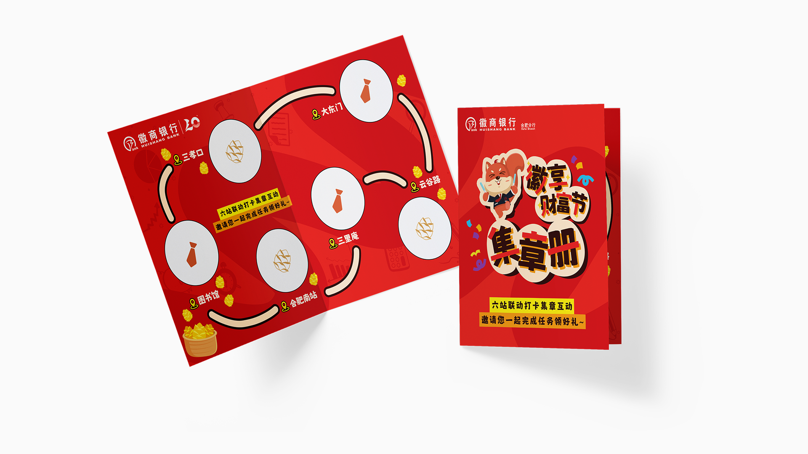
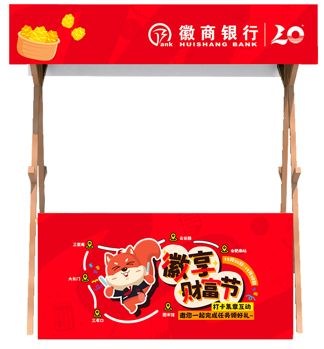
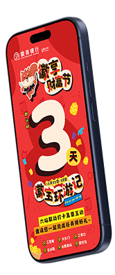
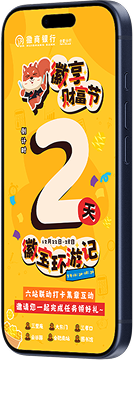
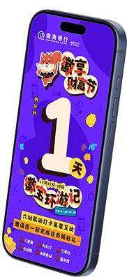
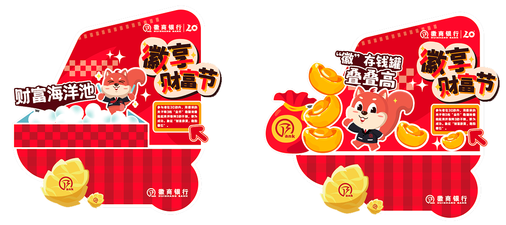

Huishang Bank celebrates their 20th anniversary with the citizens of Hefei! In the span of 2 weeks, I was tasked with creating key visuals for the brand's celebration campaign, utilizing the company's exisiting branding to create the fun visuals that they asked for.
Overview
Huishang Bank approached this milestone wanting more than just a commemorative logo. They needed a full campaign that could speak to both longtime clients and a younger generation of banking customers.
Chinese New Years was drawing near, and the company wanted to join in on the festivites by having a New Year's fortune themed campaign in the city's busiest subway stations.
Process
Research & Brand Immersion
For this campaign, the clients wanted something that could appeal to the youth, and also have elements from the bank's original branding. To help me get on the right track, I was given the official 20th anniversary KV, as well as the official mascot.
Huishang Bank's 20th Anniversary key visual is formal but festive. The main colors used were red and gold, two colors that symbolize Chinese fortune. On the other hand, the mascot was childish and laid back.
And so, it was my job to create a new key visual that mixes the essence of both styles that was given to me.

Concept Development
I experimented with different fonts, layouts and colors. I also tried to make use of all of the mascot assets that were given to me to create more dynamic compositions.


Final Key Visual
I created a custom logotype for the event to give it a distinct and memorable identity. Since the event centered around collecting stickers to complete a sticker booklet, I incorporated white outline details inspired by the die-cut edges of stickers. The final color palette was developed as an extension of the bank’s existing 20th anniversary branding, helping maintain visual consistency while giving the event its own playful character.


Final Key Assets
Adapted the system across print collateral, social media templates, branch environmental graphics, and a commemorative booklet. Delivered production-ready files with an adaptation guide for the internal team.





Final Product
The final system deployed across 6 subway stations: sticker collection booklet, minigame kiosks, and digital countdowns on social media.
Reflection
The campaign went live for 1 week, receiving positive internal and external reception. The client's main feedback cited the visual coherence as a standout quality! If I had more time and resources, I would've made the minigame kiosks stand out more. I had some rough designs that weren't used to to various constraints.
